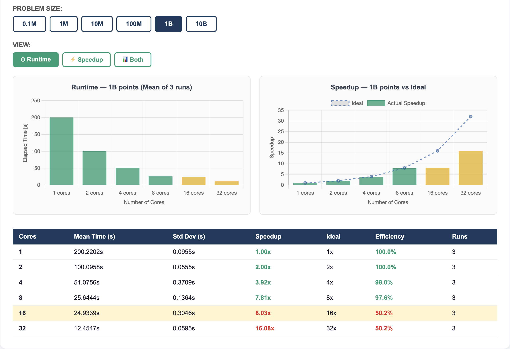
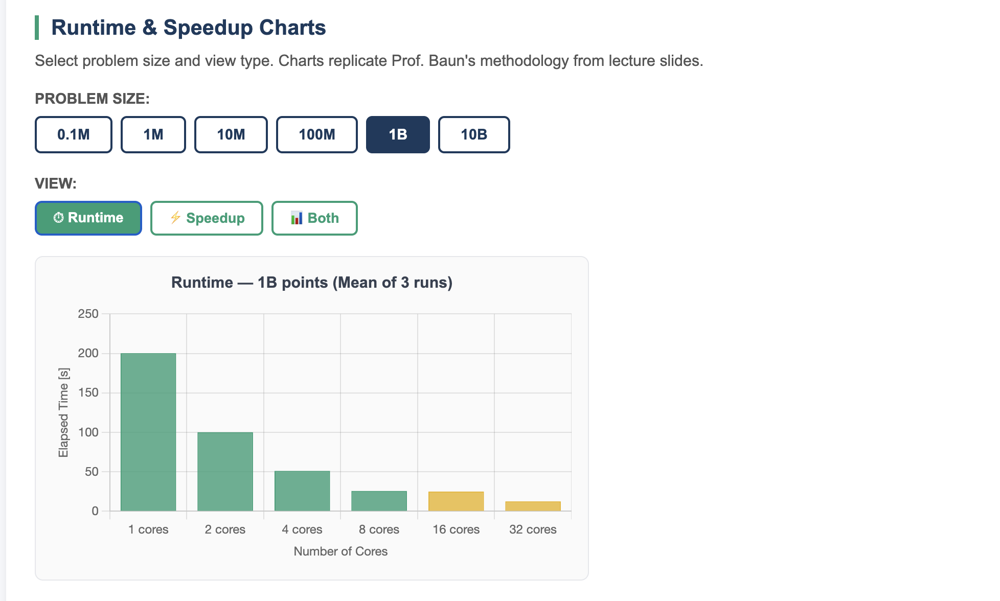
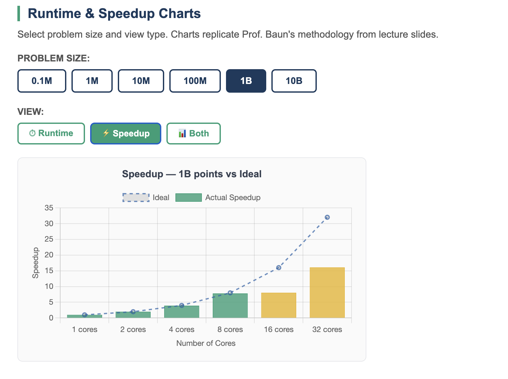
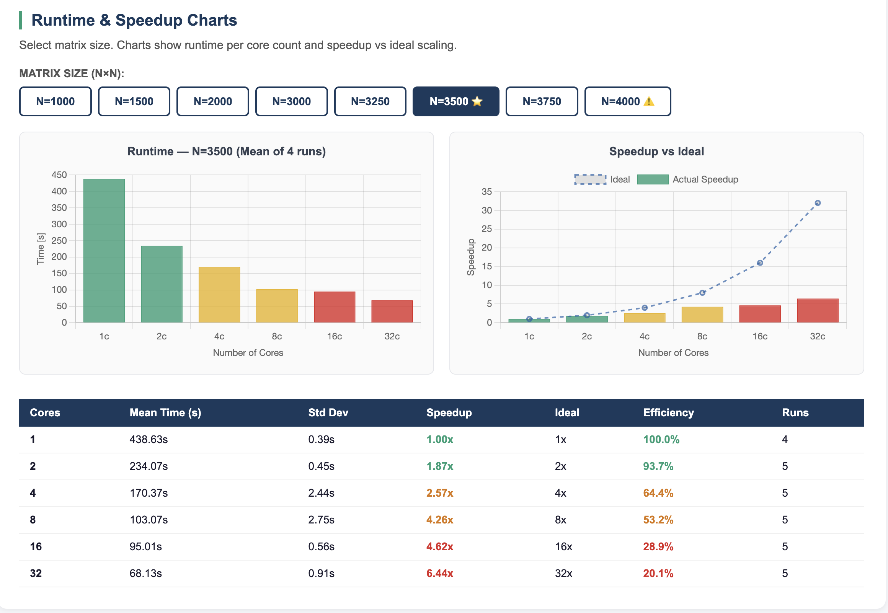
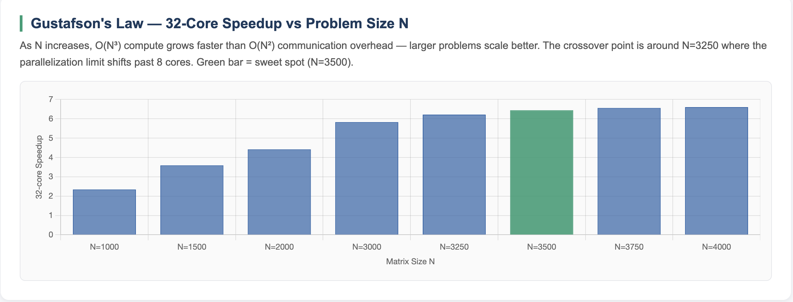

Demonstrating Amdahl's Law and Gustafson's Law using two custom MPI programs across 8 Raspberry Pi 3 nodes and 32 cores.
MPI (Message Passing Interface) is the standard for parallel programming on distributed memory systems. Each MPI process runs independently on its own memory — processes communicate explicitly by sending and receiving messages over the network. We used OpenMPI deployed across all 8 Pi3 nodes, giving us 32 MPI processes (4 cores × 8 nodes).
The key insight MPI reveals is that communication overhead determines parallel scalability. An algorithm with minimal communication scales near-ideally. An algorithm that must send large amounts of data between processes hits a ceiling — no matter how many cores you add.
# 1. Stop k3s-agent on all Pi3 nodes for ip in 10.10.10.21 10.10.10.22 10.10.10.23 10.10.10.24 \ 10.10.10.25 10.10.10.26 10.10.10.27 10.10.10.28; do ssh admin@$ip "sudo systemctl stop k3s-agent" & done wait # 2. Check temperatures (should be below 65°C) for ip in 10.10.10.21 10.10.10.22 10.10.10.23 10.10.10.24 \ 10.10.10.25 10.10.10.26 10.10.10.27 10.10.10.28; do echo -n "$ip: " ssh admin@$ip "vcgencmd measure_temp" done # 3. Kill any leftover MPI processes for ip in 10.10.10.21 10.10.10.22 10.10.10.23 10.10.10.24 \ 10.10.10.25 10.10.10.26 10.10.10.27 10.10.10.28; do ssh admin@$ip "pkill -f monte_carlo_pi; pkill -f matrix_multiply" 2>/dev/null done
The hostfile defines which nodes and how many cores per node participate. We used a Pi3-only hostfile — Pi5 was always excluded from MPI compute.
pi3-01 slots=4 pi3-02 slots=4 pi3-03 slots=4 pi3-04 slots=4 pi3-05 slots=4 pi3-06 slots=4 pi3-07 slots=4 pi3-08 slots=4
We chose two examples with contrasting communication patterns to clearly demonstrate how communication complexity determines parallel scalability.
Each MPI rank independently generates random points and checks if they fall inside a unit circle. A single MPI_Reduce at the end combines all counts to estimate π.
Dense matrix C = A × B. Each rank receives rows of A via MPI_Scatter and a full copy of matrix B via MPI_Bcast. Results gathered with MPI_Gather.
The contrast is intentional. Monte Carlo Pi has O(1) communication and achieves 16.2× speedup at 32 cores. Matrix Multiplication has O(N²) communication and achieves only 6.41× at 32 cores. This directly demonstrates how communication pattern determines the parallelization limit — the core insight behind both Amdahl's and Gustafson's Laws.
# Binary location: ~/monte_carlo_pi # Replace <CORES> with: 1, 2, 4, 8, 16, or 32 # Replace <POINTS> with: 100000, 1000000, 10000000, # 100000000, 1000000000, 10000000000 mpirun -np <CORES> \ --hostfile ~/mpi_hosts_pi3only \ ~/monte_carlo_pi <POINTS> # Example: 32 cores, 1 billion points mpirun -np 32 --hostfile ~/mpi_hosts_pi3only ~/monte_carlo_pi 1000000000 # Output: <time_seconds> <pi_estimate> <cores> <points> # Example: 12.566 3.14159 32 1000000000
# Binary location: ~/matrix_multiply # Replace <CORES> with: 1, 2, 4, 8, 16, or 32 # Replace <N> with: 1000, 1500, 2000, 3000, 3250, 3500, 3750, or 4000 # Note: N=5000 causes memory swap on Pi3 — avoid mpirun -np <CORES> \ --hostfile ~/mpi_hosts_pi3only \ ~/matrix_multiply <N> # Example: 8 cores, N=3500 (sweet spot) mpirun -np 8 --hostfile ~/mpi_hosts_pi3only ~/matrix_multiply 3500 # Output: <time_seconds> <N> <cores>
Each MPI process holds a full copy of matrix B in memory (N² × 8 bytes). At N=5000 this causes memory swap on Pi3 nodes (confirmed: 470MB swap usage). Maximum safe N is 3500–4000. Sweet spot is N=3500 — best scaling without memory pressure.
Both scaling laws are demonstrated across our two MPI examples. Full charts and analysis are in the Results page.
Speedup is limited by the serial fraction of the program. No matter how many cores you add, the serial part (communication overhead) creates a ceiling.
If you increase the problem size proportionally with the number of cores, the parallel fraction grows and efficiency improves — the serial fraction becomes relatively smaller.

Detailed results with min/max/mean tables and interactive charts are on the Results page. Key chart previews below.




O(1) communication allows near-ideal scaling at large problem sizes. The parallelization limit is at 8 cores — caused by network topology when crossing from 2 to 4 physical nodes, not by problem size.
O(N²) communication limits scaling. Parallelization limit shifts from 4 cores (N=1000) to 8 cores (N=1500) to broken at N=3250 — demonstrating Gustafson's Law: larger problem = limit pushed further.
In Monte Carlo Pi, 8→16 cores provides less than 3% improvement regardless of problem size (tested 1B to 25B points). The limit is structural — crossing from 2 to 4 physical nodes introduces network overhead that dominates the MPI_Reduce.